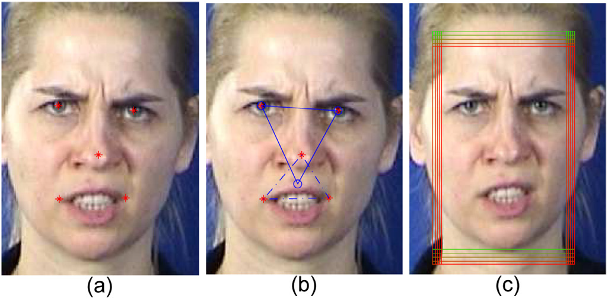

Visualization
The ‘disgust’ expression of different persons in different databases

|
The data preprocessing
|  |
The hidden unit, weight and the proposed feature sparseness
The structures of two networks

|